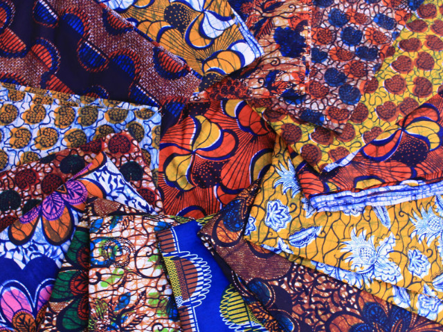

About Togo
Togo, a West African nation on the Gulf of Guinea, is known for its palm-lined beaches and hilltop villages. Koutammakou, inhabited by the Batammariba people, is a traditional settlement of fortresslike clay huts dating to the 17th century. In the capital, Lomé, are the multistory Grand Marché bazaar and the Fetish Market, offering traditional talismans and remedies relating to the vodun (voodoo) religion.
Rich Culture
Togo's culture reflects the influences of its 37 tribal ethnic groups, the largest and most influential of which are the Ewe, Mina, and Kabye. French is the official language of Togo, but many native African languages are spoken there as well. Music and dance are thr most popular forms of culture. The Togolese have had a varied colonial herigate which has resulted in the variety of Christian denominations and European languages; the voodoo religion is a strong influence in the country and many young girls, after fulfilling an initiation period, will devote their lives to serving the religion and the voodoo village preist.
Some Of The Rich Cultures In Togo
Africans tell their story through their way of life (culture).

The Togolese Kitenge Fabric
The country is known for its brightly coloured, wrap around pagnes. These dresses can be made of the wax print cotton that is so popular in West Africa, with each pattern having a name and an elaborate meaning that women choose according to the message they wish to convey that day.
Histoy Of Togo
The history of Togo can be traced to archaeological finds which indicate that ancient local tribes were able to produce pottery and process tin. During the period from the 11th century to the 16th century, the Ewé, the Mina, the Gun, and various other tribes entered the region. Most of them settled in coastal areas.. The Portuguese arrived in the late 15th century, followed by other European powers. Until the 19th century, the coastal region was a major slave trade centre, earning Togo and the surrounding region the name "The Slave Coast".
In 1884, Germany claimed a coastal protectorate, which grew inland until it became the German colony of Togoland in 1905. A railway, the port of Lomé, and other infrastructure were developed. During the First World War, Togoland was invaded by Britain and France. In 1922, Great Britain received the League of Nations mandate to govern the western part of Togo and France to govern the eastern part. After World War II, these mandates became UN Trust Territories. The residents of British Togoland voted to join the Gold Coast as part of the new independent nation of Ghana in 1957.
French Togoland became the Togolese Republic in 1960. Its Constitution, adopted in 1961, instituted the National Assembly of Togo as the supreme legislative body. In the same year, the first president, Sylvanus Olympio, dissolved the opposition parties and arrested their leaders. When he was assassinated in a coup in 1963, the military handed over power to an interim government led by Nicolas Grunitzky. The military leader Gnassingbé Eyadéma overthrew Grunitzky in a bloodless coup in 1967. He assumed the presidency and introduced a one-party system in 1969. Eyadéma remained in power for the next 38 years. When he died in 2005, the military installed his son, Faure Gnassingbé, as president. Gnassingbe held elections and won, but the opposition claimed fraud. Because of political violence, around 40,000 Togolese fled to neighboring countries. Gnassingbé was reelected two more times.